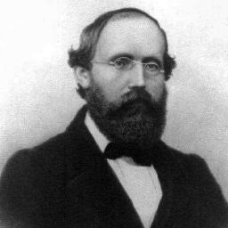

全部项目
agent-hub 领衔
一个会查数据的对话式 Agent：ReAct 编排工具调用，工具直接返回结构化卡片而不是一坨文字；向量 + 全文 + 标量混合检索，还有跨会话也认得你的长期记忆。
DDD 分层 · SSE 流式事件 · A2UI 结果卡片 · A2A 协议与 Nacos 发现

GroveMQ 新登场
给 AI、IoT 和车联网写的 MQTT Broker：轻量 Actor 内核管会话，节点间用 gRPC 自动路由消息，在 K8s 里靠 headless service 自己找到同伴。
持久会话 · 共享订阅 · TLS / ACL · Prometheus 指标 · 三节点集群实测
第三个位置，还空着。
更多项目正在路上，先去 GitHub 逛逛也可以 ↗
更多项目正在路上，先去 GitHub 逛逛也可以 ↗

关于我
把复杂的东西拆清楚，再一行行搭回来。
RiemannChow，「老周聊架构」主理人，专注AI、大数据、云原生、数据库、物联网10余年，InfoQ签约作者，阿里云博客专家，腾讯云架构师深圳同盟理事，IT新媒体年度优秀文章，特别擅长分布式消息引擎Kafka以及Pulsar，seekdb贡献者。